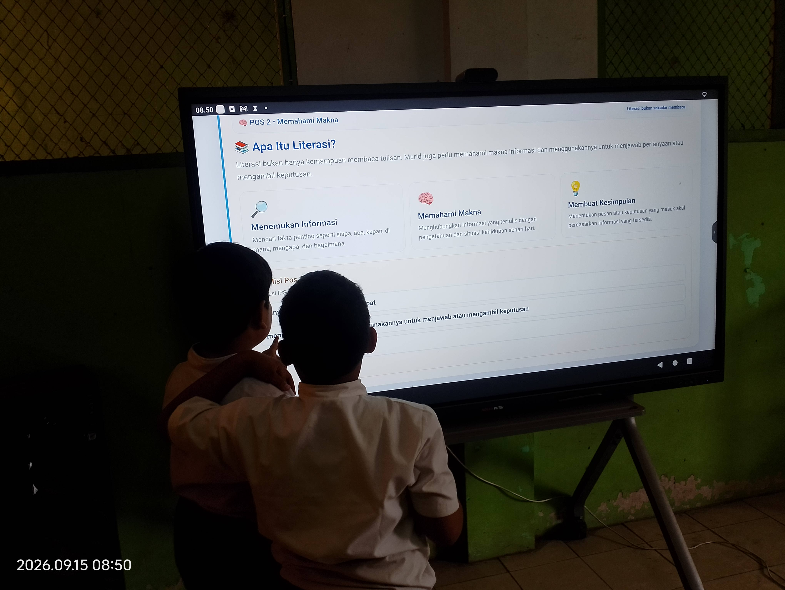

🎯
Masalah Pembelajaran
Pembelajaran IPS perlu menghubungkan literasi dan numerasi dengan konteks kehidupan masyarakat dan data yang bermakna.
Selengkapnya →Pembelajaran IPS perlu menghubungkan literasi dan numerasi dengan konteks kehidupan masyarakat dan data yang bermakna.
Selengkapnya →PIKTO-IPS hadir sebagai media pembelajaran digital yang interaktif, kontekstual, dan menyenangkan.
Selengkapnya →Dikembangkan dengan GitHub Pages, Google Apps Script, Google Spreadsheet, dan Google Drive.
Selengkapnya →Menampilkan bukti autentik progres, hasil belajar, dan refleksi murid setelah implementasi.
Selengkapnya →PIKTO-IPS adalah media pembelajaran digital interaktif untuk murid sekolah dasar yang mengintegrasikan konteks IPS, literasi membaca dan informasi, numerasi, piktogram, video interaktif, asesmen bertingkat, dan gamifikasi. Murid membaca konteks, mengamati gambar dan data, menghitung, menalar, mengambil keputusan, kemudian menyelesaikan tantangan.
Bagian ini menyajikan alasan pengembangan inovasi secara ringkas dan mudah dipahami juri. Gunakan data kondisi awal yang benar-benar Anda miliki untuk melengkapi bukti.
Pembelajaran IPS perlu menghubungkan konteks kehidupan masyarakat dengan kemampuan membaca informasi, mengamati data, menghitung, menalar, dan mengambil keputusan.
Murid belajar melalui konteks IPS, literasi, piktogram dan visualisasi data, numerasi, video interaktif, tantangan bertingkat, serta umpan balik digital.
Isi bagian dampak dengan data autentik: progres, hasil belajar, capaian literasi-numerasi, dokumentasi, karya murid, dan refleksi setelah implementasi.
Koding ditempatkan untuk mendukung perjalanan belajar, bukan sekadar memperindah tampilan.
Sistem menghubungkan antarmuka pembelajaran, API, basis data, dan penyimpanan berkas untuk merekam proses belajar secara terstruktur.
Frontend aplikasi: beranda, literasi, numerasi, tantangan, progres dan interaksi murid.
HTML • CSS • JavaScriptAPI dan logika sistem: pengguna, progres, soal, jawaban, penilaian, refleksi dan sinkronisasi.
Google Apps ScriptBasis data pengguna, bank soal, progres, jawaban, hasil dan refleksi.
Google SpreadsheetPenyimpanan dokumen atau hasil pengamatan yang dikirim melalui aktivitas pembelajaran.
Cloud StorageDokumentasi autentik pelaksanaan pembelajaran menggunakan PIKTO-IPS bersama murid.

Murid berinteraksi dengan materi PIKTO-IPS melalui Papan Interaktif Digital pada kegiatan pembelajaran.
Src yang sudah disiapkan: img/portfolio/implementasi-2.jpg
Src yang sudah disiapkan: img/portfolio/implementasi-3.jpg
Jangan isi angka perkiraan. Masukkan hanya hasil yang berasal dari data kelas dan database PIKTO-IPS.
Jumlah murid yang benar-benar mengikuti implementasi.
Gunakan indikator yang paling kuat dari data aktual.
Isi dengan perbandingan atau bukti hasil yang dapat dipertanggungjawabkan.
Isi hanya dengan kegiatan berbagi yang benar-benar telah dilaksanakan dan sertakan bukti pendukung.
[Isi kegiatan KKG/sekolah/forum/komunitas yang telah dilakukan, tanggal, tempat, dan sasaran.]
[Tuliskan kendala nyata, respons murid/guru, serta perubahan produk setelah implementasi.]
Pengembangan dapat diarahkan pada penguatan dashboard guru, analisis data pembelajaran, dan penyempurnaan konten berdasarkan evaluasi.
Unggah dokumen ke folder docs/ di repository atau ganti tautannya dengan Google Drive yang dapat diakses juri.